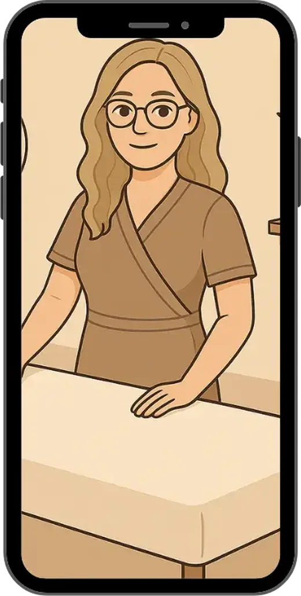
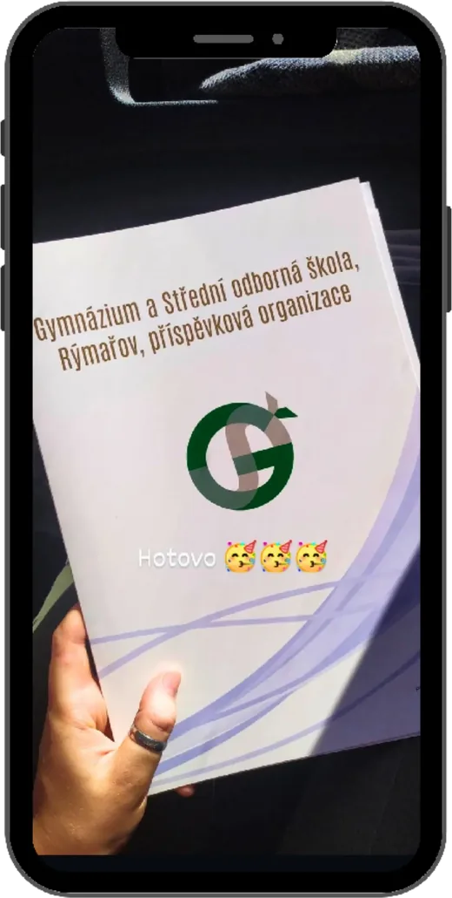

Něco málo o mně
Poznejte můj přístup, zkušenosti a místo, kde vzniká prostor pro klid, péči a vědomý dotek.

Kdo jsem?
Jmenuji se Michaela a jsem především mámou úžasné holčičky, která mě každý den žene kupředu.
Masáže mě pohltily už v dětství, kdy jsem masírovala rodinu za drobný peníz. Z malé holky vyrostla slečna, která se rozhodla jít touto cestou naplno.
Vystudovala jsem obor Masér sportovní a rekondiční zakončený maturitou.
Masíruji od roku 2016, kdy jsem nastoupila na školu. Právě díky studiu jsem měla možnost získat cenné zkušenosti v lázních, rehabilitacích i wellness centrech.
Věřím, že dotek má sílu uzdravovat. Rozhodla jsem se proto vytvořit místo, kde se tělo i mysl mohou zregenerovat – místo klidu, pohody a nového začátku.
Aura Michaell Massage je mojí oázou, kam vás zvu k odpočinku i načerpání nové energie.
- Masíruji od roku 2016
- 1 206 hodin odborné výuky a praxe

Praxe a vzdělání
Obor Masér sportovní a rekondiční zakončený maturitou
Gymnázium a Střední odborná škola, Rýmařov, příspěvková organizace
-
2016–2017
- Teorie masáží 33 hodin
- Klasická masáž 132 hodin
- Sportovní masáž 132 hodin
-
2017–2018
- Sportovní a rekondiční masáž 66 hodin
- Klasická masáž 66 hodin
- Reflexní masáž 66 hodin
- Reflexní masáž plosky nohy 33 hodin
- Baňková masáž a moxování 33 hodin
- Souvislá odborná praxe 60 hodin
-
2018–2019
- Manuální lymfodrenáž 99 hodin
- Krystaloterapie a masáž lávovými kameny 33 hodin
- Průběžné náslechy na pracovištích, přístrojové masáže 132 hodin
- Souvislá odborná praxe 60 hodin
-
2019–2020
- Měkké (jemné) manuální techniky 58 hodin
- Aromaterapie 29 hodin
- Základy alternativních a orientálních technik 58 hodin
- Příprava k maturitní zkoušce 116 hodin